Image Copies
This is an overview of copying to and from a VkImage of various formats.
Image Copy Permutations
There are 3 main ways to copy to/from a VkImage
| Copy Type | Original (Vulkan 1.0) | VK_KHR_copy_commands2 (Vulkan 1.3) - Added a missing pNext in the structs |
VK_EXT_host_image_copy (Vulkan 1.4) - allows copies on host without a VkBuffer or VkCommandBuffer |
|---|---|---|---|
Buffer to Image |
|
|
|
Image to Buffer |
|
|
|
Image to Image |
|
|
|
Image Subresource
When you copy an image, you will need to specify an image subresource which is used to describe the part of the image being copied.
There are 3 structs used to describe the image subresource
-
VkImageSubresource- single array layer, singe mip level -
VkImageSubresourceLayers- multiple array layers, singe mip level -
VkImageSubresourceRange- multiple array layers, multiple mip levels
Image Layout is Opaque
The reason you need a subresource of the image is because the image is an opaque object. When creating an image, the memory is not always going to be tightly packed together. When dealing with a CPU, you can normally assume a 2D or 3D image is just laid out in as large 1D buffer. GPU hardware has various memory alignment requirements, and will adjust the memory as required.
While buffers and CPU memory are addressed with a single linear offset, images are addressed in multiple dimensions (ex. 2D image needs an x and y offset). When copying data in or out of images, each of these dimensions must be specified to describe the data being copied.
The following is a small example to show how two GPU can represent a VkImage layout differently.
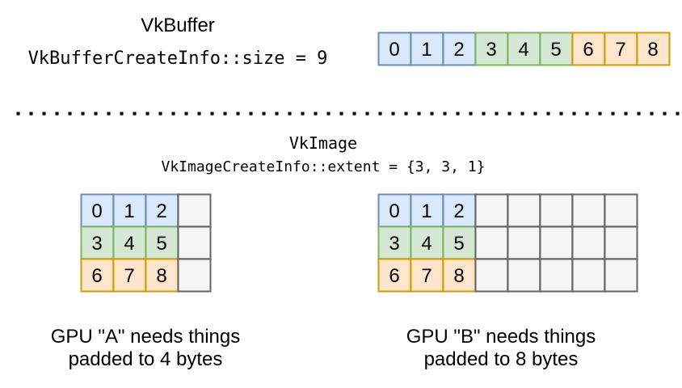
Addressing Calculation
When copying between a VkBuffer/VkDeviceMemory and VkImage the data in the non-image might not be tightly packed.
The VkBufferImageCopy (or VkMemoryToImageCopy) struct provides 3 fields to set where in the buffer to read/write the memory
-
bufferOffset(where to start) -
bufferRowLength(where the extent.y starts) -
bufferImageHeight(where the extent.z starts)
|
Setting all of these to zero means everything is tightly packed in the |
The spec addressing formula is pretty standard, the one thing that can trip you up is that there is no overlapping memory between rows.
In the following example, if you have a {4,4,1} image, the rowExtent is the max(bufferRowLength, imageExtent.width).
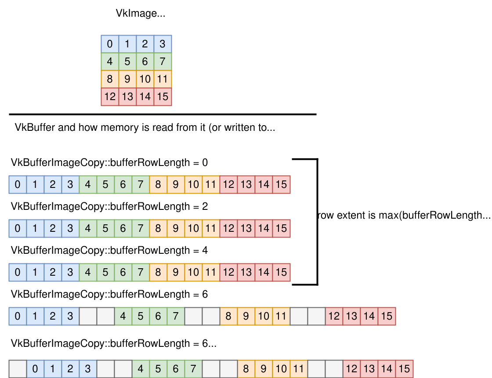
2D Array and 3D
You are actually able to copy between an array of 2D images and a single 3D image.
Using the following two example VkImage
// VkImage "A"
VkImageCreateInfo::imageType = VK_IMAGE_TYPE_2D;
VkImageCreateInfo::extent = {8, 8, 1};
VkImageCreateInfo::arrayLayers = 8;
// VkImage "B"
VkImageCreateInfo::imageType = VK_IMAGE_TYPE_3D;
VkImageCreateInfo::extent = {8, 8, 8};
VkImageCreateInfo::arrayLayers = 1;You can have a copy such as
// Copying image A to B
VkImageCopy copy;
copy.extent = {8, 8, 8};
// 3D
copy.srcSubresource.baseArrayLayer = 0;
copy.srcSubresource.layerCount = 1;
// 2D array
copy.dstSubresource.baseArrayLayer = 0;
copy.dstSubresource.layerCount = 8;where the extent.depth is 8, which is allowed for a 2D image because it has a layerCount of 8 to correspond to it.
MipLevel difference
You might be thinking what the difference is between a 3D image and 2D image with layers. One main difference is the mipchains they generate.
Each miplevel the x,y, and z are are halved at each mip level, while the layer count is not.
As an example, let’s try to copy miplevel 1:
-
The 3D extent would be
{4, 4, 4} -
The 2D extent would be
{4, 4}, but it still has all 8 layer counts
This means you have to be careful when copying between the two
// Copying image A to B miplevel 1
VkImageCopy copy;
copy.extent = {8, 8, 8};
// 3D
copy.srcSubresource.baseArrayLayer = 0;
copy.srcSubresource.layerCount = 1;
copy.srcSubresource.mipLevel = 1;
// 2D array
copy.dstSubresource.baseArrayLayer = 0;
copy.dstSubresource.layerCount = 4; // matches the miplevel
copy.srcSubresource.mipLevel = 1;Compressed Image Copies
Dealing with compressed images can be a bit tricky, the main thing is to first grasp the terminology of texel vs texel block
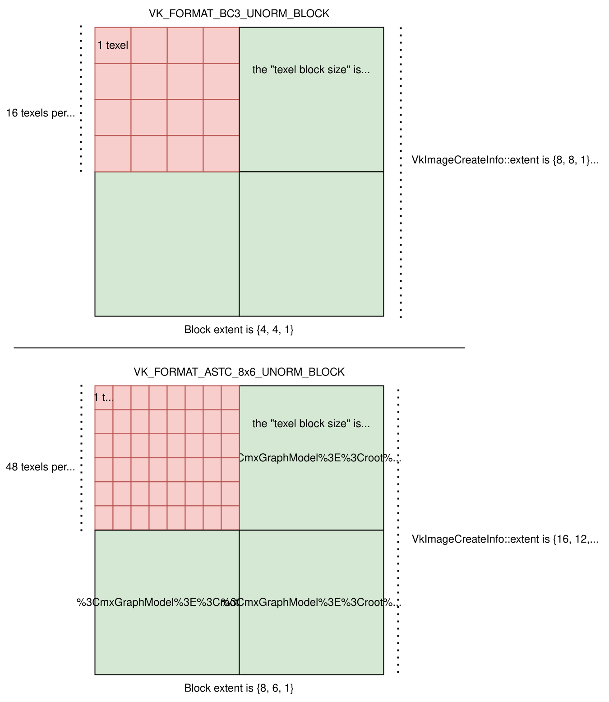
|
Uncompressed formats (ex. |
The block size, block extent, and other info can be found either in the spec, vk.xml, or even vk_format_utils.h in Vulkan-Utility-Libraries.
Copying Between Compressed and Uncompressed
Copying to and from a VkBuffer/VkDeviceMemory is straight forward, the extent is just the amount of texels, so it is the same when you created the image.
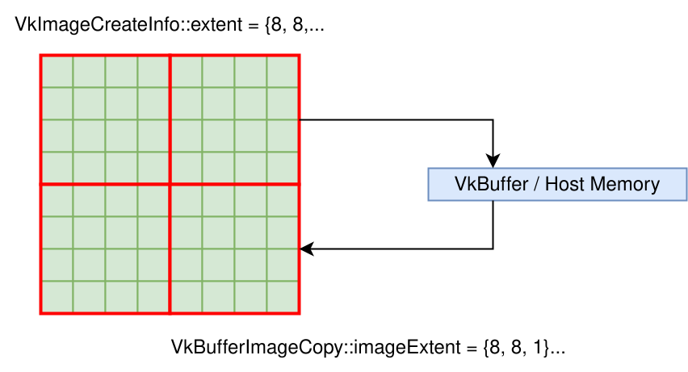
The tricky part is when you deal with a uncompressed image that has a block extent of {1, 1, 1}. You will set the VkImageCopy::extent to match the texels in the srcImage, and the dstImage is scaled as described in the spec.
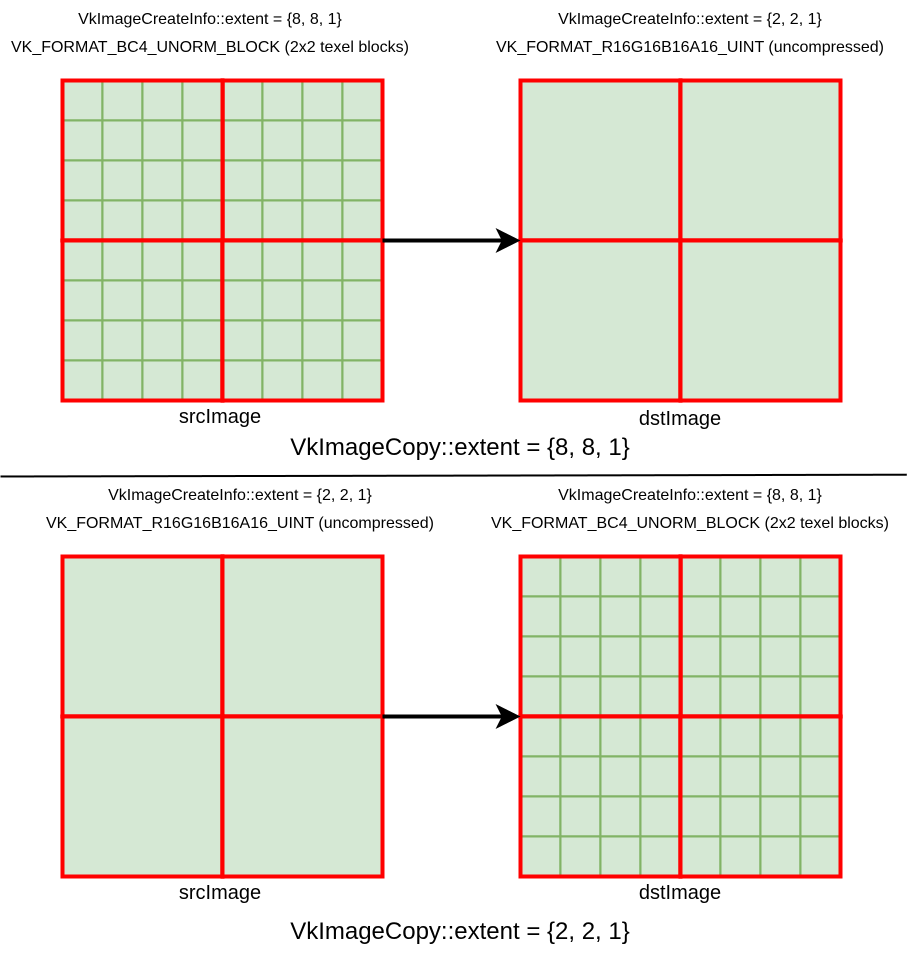
Some initial reactions might be "how are you copying 8 texels into 2?!"
The main things to realize is the "size" of each texel block in the above diagrams are 64-bits. If you try to copy different size blocks, you will get a validation error message.
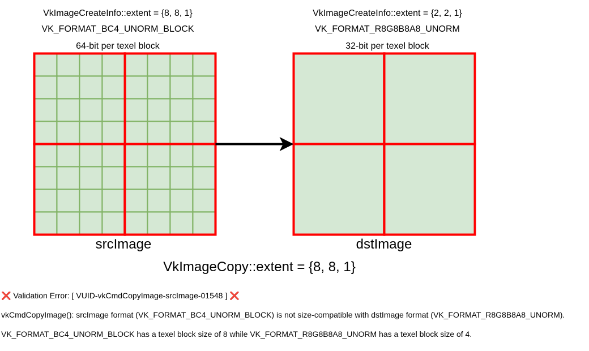
Partial Texel Block
When using a compressed image, it is possible you might end up with a partially full texel block.
This can be from just setting the original extent that is not a multiple of the texel block extent.
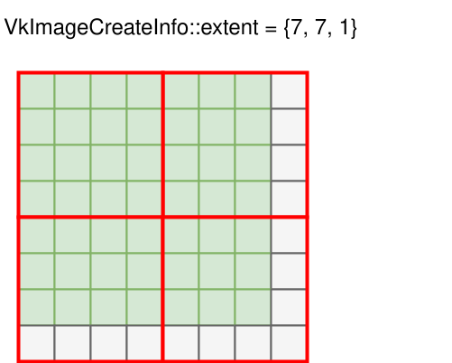
This can also occur when you create miplevels.
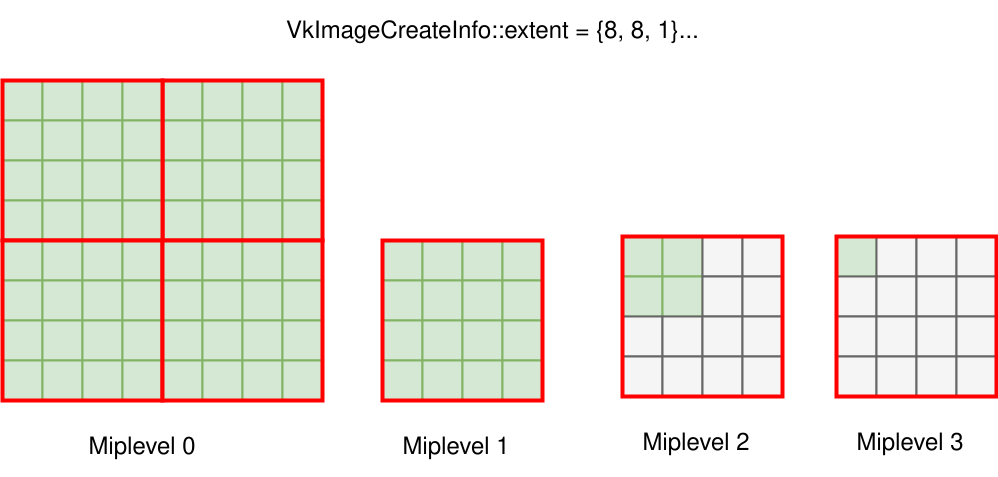
This can also occur if creating a 1D compressed texture.
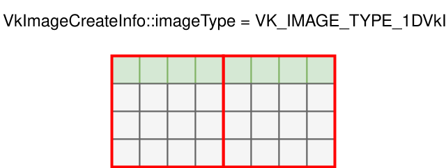
In all these examples, it is important to realize that you copy in terms of texels and not texel blocks
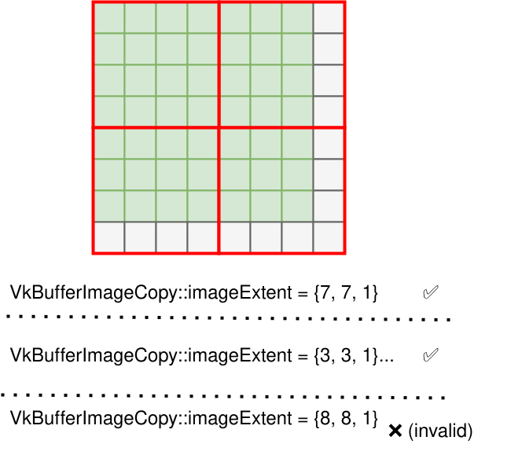
Multi-Planar
Multi-planar formats are those with _2PLANE or _3PLANE suffix (more about VK_KHR_sampler_ycbcr_conversion).
When copying to and from these images, you do not operate on all format components in the image, but instead, you independently operate only on the format planes explicitly chosen.
Using VK_FORMAT_G8_B8R8_2PLANE_420_UNORM as an example, this contains two planes. From the Plane Format Compatibility Table in the spec (generated from the vk.xml) we can see that
-
plane 0
-
compatible format
VK_FORMAT_R8_UNORM` -
width divisor of
1 -
height divisor of
1
-
-
plane 1
-
compatible format
VK_FORMAT_R8G8_UNORM` -
width divisor of
2 -
height divisor of
2
-
What this looks like in code is the following
VkBufferImageCopy region[2];
region[0].imageSubresource.aspectMask = VK_IMAGE_ASPECT_PLANE_0_BIT;
region[0].imageExtent = {width, height, 1};
region[1].imageSubresource.aspectMask = VK_IMAGE_ASPECT_PLANE_1_BIT;
region[1].imageExtent = {width / 2, height / 2, 1};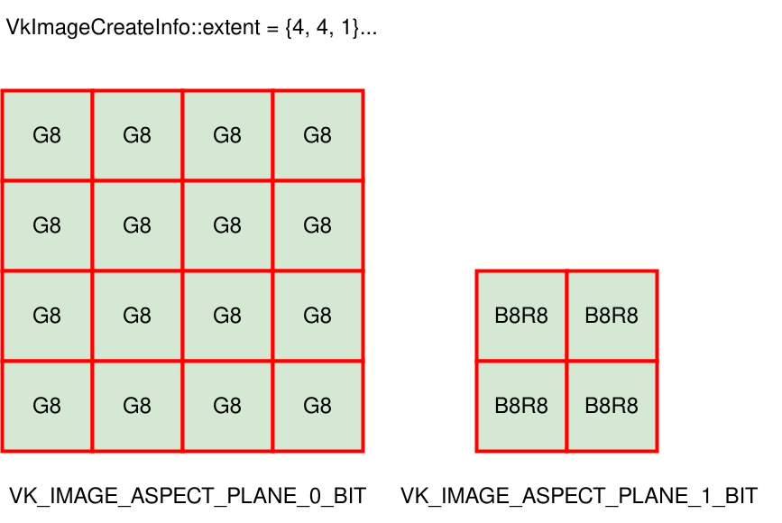
Singlar-Planar YCbCr
There is anthoer edge case to watch out for! Formats such as VK_FORMAT_G8B8G8R8_422_UNORM can be tricky as they not are technically compressed, but also not multi-planar (so you copy with VK_IMAGE_ASPECT_COLOR_BIT).
The spec does give you a hint how to and handle them for copies:
"[VK_FORMAT_G8B8G8R8_422_UNORM] For the purposes of the constraints on copy extents, this format is treated as a compressed format with a 2×1 compressed texel block."